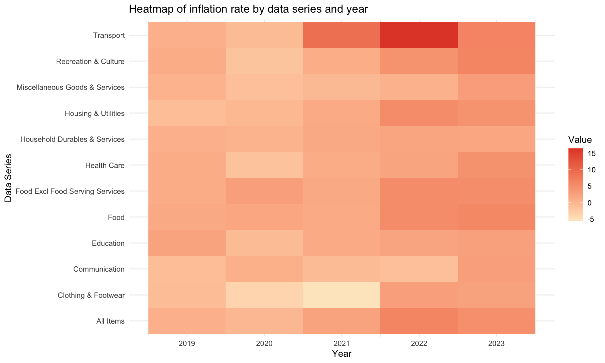
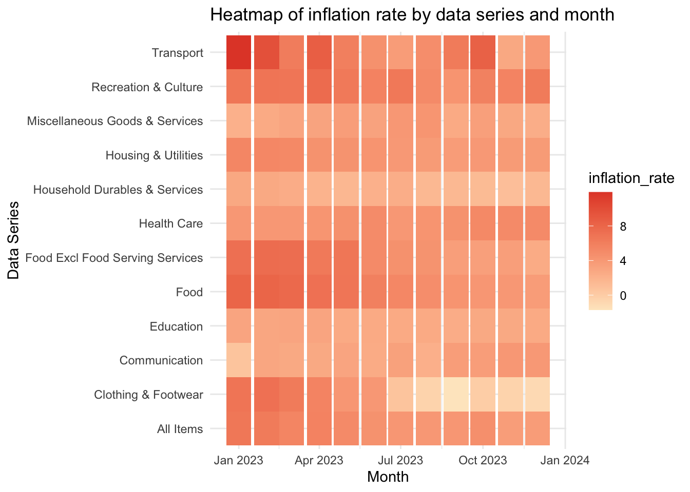
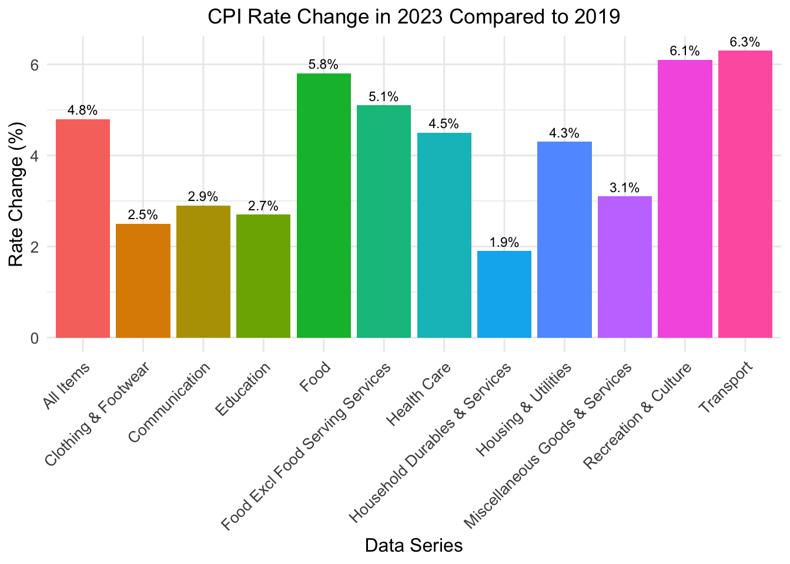
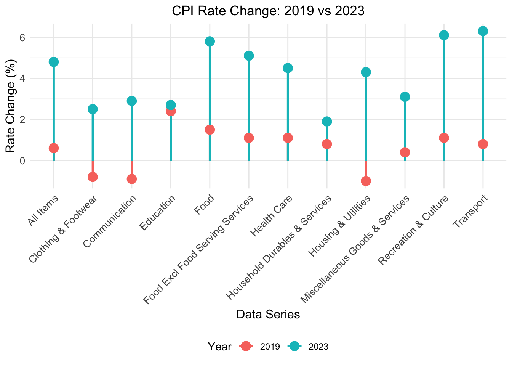
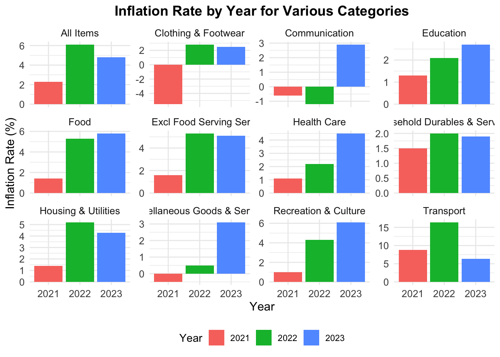
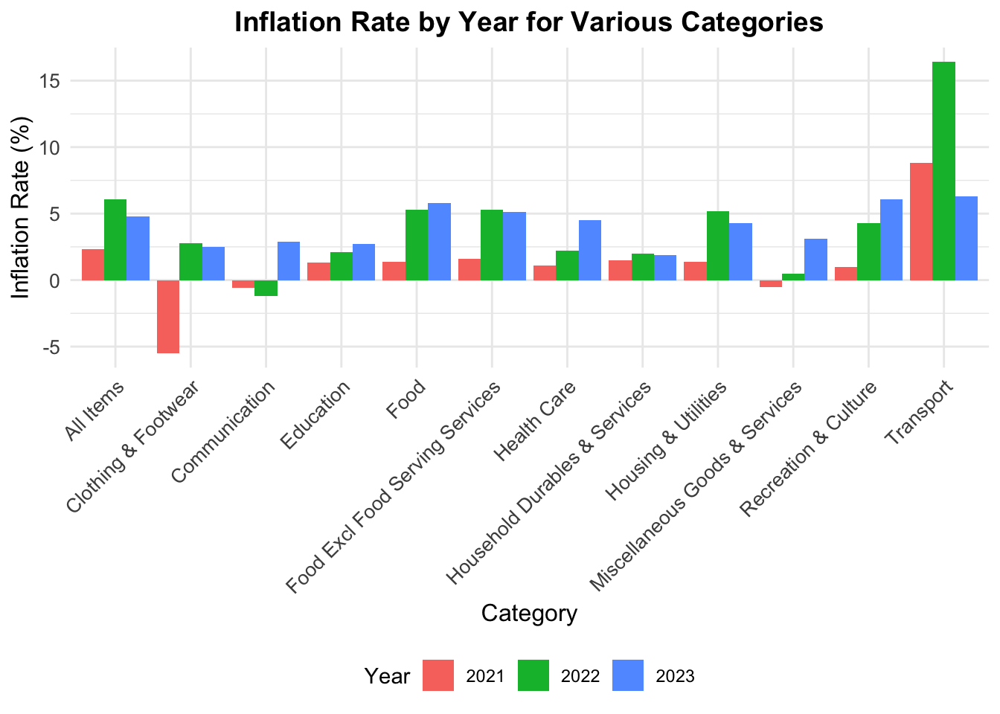
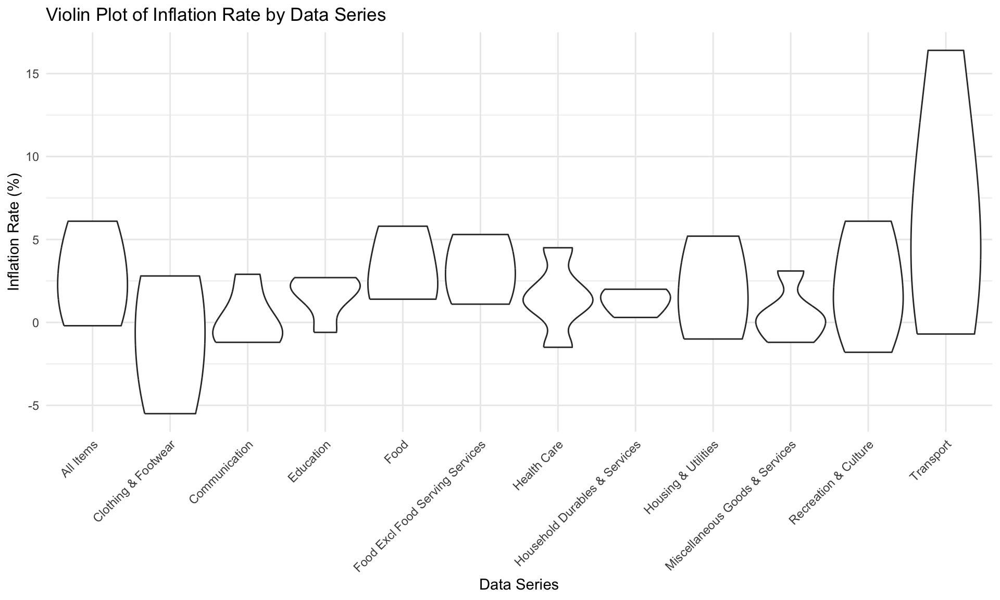
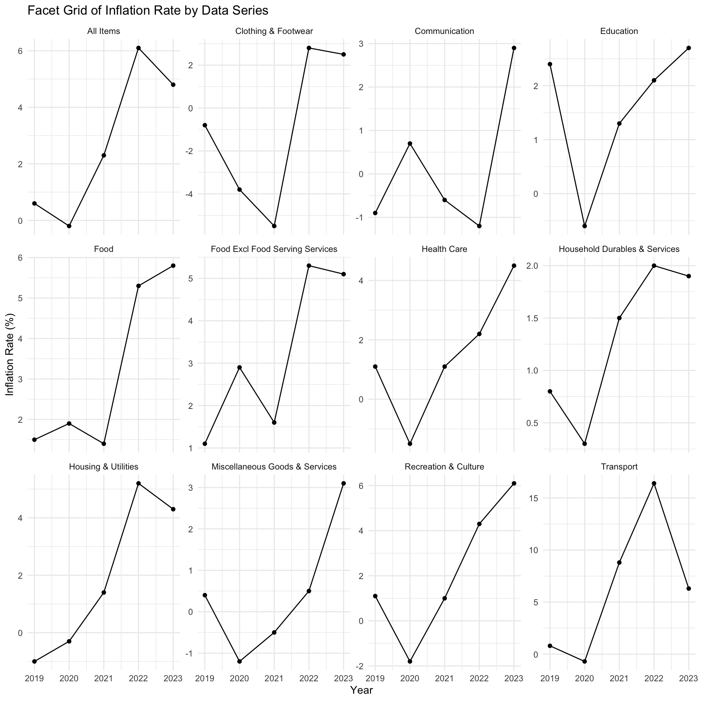

library(tidyverse)
library(gt)
library(palmerpenguins)
library(ggbeeswarm)
library(ggmosaic)
library(ggplot2)
library(dplyr)
library(readr)
library(reshape2)
library(gridExtra)Consolidated
Required Packages
Data
inflation_rate <- read_csv("M212911.csv", skip = 10)
inflation_rate <- inflation_rate[1:152,]
inflation_rate # A tibble: 152 × 749
`Data Series` `2024 Apr` `2024 Mar` `2024 Feb` `2024 Jan` `2023 Dec`
<chr> <dbl> <dbl> <dbl> <dbl> <dbl>
1 All Items 2.7 2.7 3.4 2.9 3.7
2 Food 2.8 3 3.8 3.3 3.7
3 Food Excl Food Servin… 0.6 0.9 3.2 2.2 2.5
4 Bread & Cereals 3.5 3.8 4.3 4.8 4.9
5 Rice 2.2 3.7 4 4.3 4.8
6 Flour -0.8 -1.4 1.3 -1.6 6.7
7 Bread 3.8 4.3 5.5 6.7 6.1
8 Noodles & Pasta 0.7 1.5 2 2.6 1.2
9 Biscuits & Cookies 2.5 2 3.9 4.4 1.4
10 Cakes & Pastries 4.5 3.8 3.6 3.7 5.1
# ℹ 142 more rows
# ℹ 743 more variables: `2023 Nov` <dbl>, `2023 Oct` <dbl>, `2023 Sep` <dbl>,
# `2023 Aug` <dbl>, `2023 Jul` <dbl>, `2023 Jun` <dbl>, `2023 May` <dbl>,
# `2023 Apr` <dbl>, `2023 Mar` <dbl>, `2023 Feb` <dbl>, `2023 Jan` <dbl>,
# `2022 Dec` <dbl>, `2022 Nov` <dbl>, `2022 Oct` <dbl>, `2022 Sep` <dbl>,
# `2022 Aug` <dbl>, `2022 Jul` <dbl>, `2022 Jun` <dbl>, `2022 May` <dbl>,
# `2022 Apr` <dbl>, `2022 Mar` <dbl>, `2022 Feb` <dbl>, `2022 Jan` <dbl>, …# Filter the data
filtered_data <- inflation_rate |>
filter(`Data Series` %in%
c("Food", "Food Excl Food Serving Services", "Clothing & Footwear","Housing & Utilities","Household Durables & Services","Health Care","Transport","Communication", "Recreation & Culture", "Education", "Miscellaneous Goods & Services", "All Items")) |>
select(`Data Series`, `2023 Jan`, `2023 Feb`,`2023 Mar`, `2023 Apr`,`2023 May`, `2023 Jun`, `2023 Jul`, `2023 Aug`,`2023 Sep`, `2023 Oct`,`2023 Nov`, `2023 Dec`)
filtered_month_data <- filtered_data |>
pivot_longer(cols = -`Data Series`, names_to = "month", values_to = "inflation_rate")
# Convert month to proper date format
filtered_month_data <- filtered_month_data |>
mutate(month = as.POSIXct(strptime(paste(month, "01"), "%Y %b %d")))inflation_rate_yearly <- read_csv("M212941.csv", skip = 9)
inflation_rate_yearly <- inflation_rate_yearly[1:152,]
inflation_rate_yearly# A tibble: 152 × 63
`Data Series` `2023` `2022` `2021` `2020` `2019` `2018` `2017` `2016` `2015`
<chr> <dbl> <dbl> <dbl> <dbl> <chr> <chr> <chr> <chr> <chr>
1 All Items 4.8 6.1 2.3 -0.2 0.6 0.4 0.6 -0.5 -0.5
2 Food 5.8 5.3 1.4 1.9 1.5 1.4 1.4 2.1 1.9
3 Food Excl Foo… 5.1 5.3 1.6 2.9 1.1 1.3 1.3 2.3 1.2
4 Bread & Cerea… 6.8 4 0.6 1.9 1.5 1.4 0.6 1.3 1.3
5 Rice 3 -1.4 -1.9 1.8 3.9 1.4 -0.5 0.8 -0.9
6 Flour 10.8 2.1 -2 -2.1 -0.2 -1.9 0.3 1.1 -0.9
7 Bread 8.2 5.1 1.1 1 1.1 1.6 0.6 1.8 2
8 Noodles & Pas… 6.5 6.7 1.2 2 -0.7 0.5 0.1 1 -1.2
9 Biscuits & Co… 6.8 7.4 0.4 4.2 1.3 1.6 1.1 2.1 1.5
10 Cakes & Pastr… 6.7 4.1 1.5 2.3 1.5 2 1.5 0.7 3
# ℹ 142 more rows
# ℹ 53 more variables: `2014` <chr>, `2013` <chr>, `2012` <chr>, `2011` <chr>,
# `2010` <chr>, `2009` <chr>, `2008` <chr>, `2007` <chr>, `2006` <chr>,
# `2005` <chr>, `2004` <chr>, `2003` <chr>, `2002` <chr>, `2001` <chr>,
# `2000` <chr>, `1999` <chr>, `1998` <chr>, `1997` <chr>, `1996` <chr>,
# `1995` <chr>, `1994` <chr>, `1993` <chr>, `1992` <chr>, `1991` <chr>,
# `1990` <chr>, `1989` <chr>, `1988` <chr>, `1987` <chr>, `1986` <chr>, …# Filter the data
filtered_yearly_data <- inflation_rate_yearly |>
filter(`Data Series` %in%
c("Food", "Food Excl Food Serving Services", "Clothing & Footwear","Housing & Utilities","Household Durables & Services","Health Care","Transport","Communication", "Recreation & Culture", "Education", "Miscellaneous Goods & Services", "All Items")) |>
select(`Data Series`, `2023`, `2022`,`2021`, `2020`,`2019`)|>
drop_na(`Data Series`, `2023`, `2022`,`2021`, `2020`,`2019`)
# print column name
yearly_data <- filtered_yearly_data %>%
mutate(`2019` = as.numeric(`2019`),
`2020` = as.numeric(`2020`),
`2021` = as.numeric(`2021`),
`2022` = as.numeric(`2022`),
`2023` = as.numeric(`2023`))
long_yearly_data <- yearly_data %>%
pivot_longer(cols = c(`2019`, `2020`, `2021`, `2022`, `2023`), names_to = "Year", values_to = "Rate_Change")%>%
mutate(Year = as.integer(Year))
data_long <- filtered_yearly_data |>
melt(id.vars = "Data Series", variable.name = "Year", value.name = "Value")|>
drop_na(`Data Series`, `Year`, `Value`)
# Convert the Year column to numeric
data_long$Year <- as.numeric(as.character(data_long$Year))
# Convert the Value column to numeric, handling non-numeric entries (e.g., "na")
data_long$Value <- as.numeric(as.character(data_long$Value))
data_long Data Series Year Value
1 All Items 2023 4.8
2 Food 2023 5.8
3 Food Excl Food Serving Services 2023 5.1
4 Clothing & Footwear 2023 2.5
5 Housing & Utilities 2023 4.3
6 Household Durables & Services 2023 1.9
7 Health Care 2023 4.5
8 Transport 2023 6.3
9 Communication 2023 2.9
10 Recreation & Culture 2023 6.1
11 Education 2023 2.7
12 Miscellaneous Goods & Services 2023 3.1
13 All Items 2022 6.1
14 Food 2022 5.3
15 Food Excl Food Serving Services 2022 5.3
16 Clothing & Footwear 2022 2.8
17 Housing & Utilities 2022 5.2
18 Household Durables & Services 2022 2.0
19 Health Care 2022 2.2
20 Transport 2022 16.4
21 Communication 2022 -1.2
22 Recreation & Culture 2022 4.3
23 Education 2022 2.1
24 Miscellaneous Goods & Services 2022 0.5
25 All Items 2021 2.3
26 Food 2021 1.4
27 Food Excl Food Serving Services 2021 1.6
28 Clothing & Footwear 2021 -5.5
29 Housing & Utilities 2021 1.4
30 Household Durables & Services 2021 1.5
31 Health Care 2021 1.1
32 Transport 2021 8.8
33 Communication 2021 -0.6
34 Recreation & Culture 2021 1.0
35 Education 2021 1.3
36 Miscellaneous Goods & Services 2021 -0.5
37 All Items 2020 -0.2
38 Food 2020 1.9
39 Food Excl Food Serving Services 2020 2.9
40 Clothing & Footwear 2020 -3.8
41 Housing & Utilities 2020 -0.3
42 Household Durables & Services 2020 0.3
43 Health Care 2020 -1.5
44 Transport 2020 -0.7
45 Communication 2020 0.7
46 Recreation & Culture 2020 -1.8
47 Education 2020 -0.6
48 Miscellaneous Goods & Services 2020 -1.2
49 All Items 2019 0.6
50 Food 2019 1.5
51 Food Excl Food Serving Services 2019 1.1
52 Clothing & Footwear 2019 -0.8
53 Housing & Utilities 2019 -1.0
54 Household Durables & Services 2019 0.8
55 Health Care 2019 1.1
56 Transport 2019 0.8
57 Communication 2019 -0.9
58 Recreation & Culture 2019 1.1
59 Education 2019 2.4
60 Miscellaneous Goods & Services 2019 0.4# Generate the heatmap
ggplot(data_long, aes(x = Year, y = `Data Series`, fill = Value)) +
geom_tile() +
scale_fill_gradient(low = "#fee8c8", high = "#e34a33", na.value = "grey") +
theme_minimal() +
labs(title = "Heatmap of inflation rate by data series and year",
x = "Year",
y = "Data Series")
# Generate the heatmap
ggplot(filtered_month_data, aes(x = month, y = `Data Series`, fill = inflation_rate)) +
geom_tile() +
scale_fill_gradient(low = "#fee8c8", high = "#e34a33") +
theme_minimal() +
labs(title = "Heatmap of inflation rate by data series and month",
x = "Month",
y = "Data Series")
# Filter the data to include only the items of interest and the years 2019 and 2023
filtered_price_index <- inflation_rate_yearly |>
filter(`Data Series` %in% c("Food", "Food Excl Food Serving Services", "Clothing & Footwear", "Housing & Utilities","Household Durables & Services","Health Care", "Transport","Communication", "Recreation & Culture", "Education", "Miscellaneous Goods & Services", "All Items")) |>
select(`Data Series`, `2019`, `2023`)
# Coerce the '2019' and '2023' columns to numeric to ensure consistent types
filtered_price_index <- filtered_price_index |>
mutate(
`2019` = as.numeric(`2019`),
`2023` = as.numeric(`2023`)
)
# Pivot the data to long format for easier plotting
long_price_index <- filtered_price_index |>
pivot_longer(cols = starts_with("20"), names_to = "year", values_to = "inflation_rate")
# Plot the data
ggplot(long_price_index, aes(x = `Data Series`, y = inflation_rate, fill = year)) +
geom_bar(stat = "identity", position = "dodge") +
geom_text(aes(label = sprintf("%.1f", inflation_rate)),
position = position_dodge(width = 0.9),
vjust = -0.5,
size = 3) +
labs(
title = "Comparison of Inflation Rates by Category between 2019 and 2023",
x = "Category",
y = "Inflation Rate (%)",
fill = "Year",
caption = "Source: Department of Statistics Singapore"
) +
theme_classic() +
theme(
axis.text.x = element_text(angle = 45, hjust = 1)
)
# Filter for the year 2023 only
filtered_long_yearly_data <- long_yearly_data %>%
filter(Year == 2023)
# Calculate total change for each Data Series
total_change <- long_yearly_data %>%
filter(Year %in% c(2019, 2023)) %>%
group_by(`Data Series`) %>%
summarize(Total_Change = Rate_Change[Year == 2023] - Rate_Change[Year == 2019])
# Merge total change with the filtered data
filtered_long_yearly_data <- filtered_long_yearly_data %>%
left_join(total_change, by = "Data Series")
# Create the bar graph with different colors for each category
ggplot(filtered_long_yearly_data, aes(x = `Data Series`, y = Rate_Change, fill = `Data Series`)) +
geom_bar(stat = "identity") +
geom_text(aes(label = paste0(round(Rate_Change, 1), "%")),
position = position_dodge(width = 0.9), vjust = -0.5, size = 3, color = "black") +
labs(title = "CPI Rate Change in 2023 Compared to 2019",
x = "Data Series",
y = "Rate Change (%)",
fill = "Data Series") +
theme_minimal() +
theme(axis.text.x = element_text(angle = 45, hjust = 1), # Rotate x-axis labels for better readability
legend.position = "none", # Remove legend since each bar is color-coded
plot.title = element_text(hjust = 0.5), # Center the plot title
axis.text = element_text(size = 10), # Increase axis text size
axis.title = element_text(size = 12)) # Increase axis title size
# Filter for the years 2019 and 2023
filtered_long_yearly_data <- long_yearly_data %>%
filter(Year %in% c(2019, 2023))
# Create the lollipop chart
ggplot(filtered_long_yearly_data, aes(x = `Data Series`, y = Rate_Change, color = factor(Year))) +
geom_segment(aes(x = `Data Series`, xend = `Data Series`, y = 0, yend = Rate_Change), size = 1) +
geom_point(size = 4) +
labs(title = "CPI Rate Change: 2019 vs 2023",
x = "Data Series",
y = "Rate Change (%)",
color = "Year") +
theme_minimal() +
theme(axis.text.x = element_text(angle = 45, hjust = 1), # Rotate x-axis labels for better readability
plot.title = element_text(hjust = 0.5),
axis.text = element_text(size = 10),
axis.title = element_text(size = 12),
legend.position = "bottom")Warning: Using `size` aesthetic for lines was deprecated in ggplot2 3.4.0.
ℹ Please use `linewidth` instead.
# Read the data
inflation_rate <- read_csv("M212941.csv", skip = 9)Rows: 203 Columns: 63
── Column specification ────────────────────────────────────────────────────────
Delimiter: ","
chr (59): Data Series, 2019, 2018, 2017, 2016, 2015, 2014, 2013, 2012, 2011,...
dbl (4): 2023, 2022, 2021, 2020
ℹ Use `spec()` to retrieve the full column specification for this data.
ℹ Specify the column types or set `show_col_types = FALSE` to quiet this message.# Filter the data to include only the first 152 rows
inflation_rate <- inflation_rate[1:152,]
# Filter the data for the years 2021, 2022, and 2023
filtered_data <- inflation_rate %>%
filter(`Data Series` %in% c("Food", "Food Excl Food Serving Services", "Clothing & Footwear", "Housing & Utilities", "Household Durables & Services", "Health Care", "Transport", "Communication", "Recreation & Culture", "Education", "Miscellaneous Goods & Services", "All Items")) %>%
select(`Data Series`, `2021`, `2022`, `2023`)
# Reshape the data for plotting
plot_data <- filtered_data %>%
pivot_longer(cols = c(`2021`, `2022`, `2023`), names_to = "Year", values_to = "Inflation Rate")
# Create the faceted bar plot
ggplot(plot_data, aes(x = Year, y = `Inflation Rate`, fill = Year)) +
geom_bar(stat = "identity", position = "dodge") +
facet_wrap(~ `Data Series`, scales = "free_y") +
labs(title = "Inflation Rate by Year for Various Categories",
x = "Year",
y = "Inflation Rate (%)") +
theme_minimal() +
theme(plot.title = element_text(hjust = 0.5, size = 14, face = "bold"),
axis.title = element_text(size = 12),
axis.text = element_text(size = 10),
strip.text = element_text(size = 10),
legend.position = "bottom")
# Create the grouped bar plot
ggplot(plot_data, aes(x = `Data Series`, y = `Inflation Rate`, fill = Year)) +
geom_bar(stat = "identity", position = "dodge") +
labs(title = "Inflation Rate by Year for Various Categories",
x = "Category",
y = "Inflation Rate (%)") +
theme_minimal() +
theme(axis.text.x = element_text(angle = 45, hjust = 1),
plot.title = element_text(hjust = 0.5, size = 14, face = "bold"),
axis.title = element_text(size = 12),
axis.text = element_text(size = 10),
legend.position = "bottom")
# Generate the violin plot: Combine a density plot with a box plot, displaying the probability density of the data at different values
# trim = TRUE: Trim the tails of the violins
# scale = "width": Scale the width of the violins, makes it easier for comparison
# adjust = 1.5: Adjust the width of the violins; increasing it = makes plot smoother,
# decreasing it = makes plot more sensitive to plot variation
ggplot(data_long, aes(x = `Data Series`, y = Value)) +
geom_violin(trim = TRUE, scale = "width", adjust = 1.5) +
theme_minimal() +
labs(title = "Violin Plot of Inflation Rate by Data Series",
x = "Data Series",
y = "Inflation Rate (%)") +
theme(axis.text.x = element_text(angle = 45, hjust = 1))
# Generate the facet grid plot
ggplot(data_long, aes(x = Year, y = Value)) +
geom_line() +
geom_point() +
facet_wrap(~ `Data Series`, scales = "free_y") +
theme_minimal() +
labs(title = "Facet Grid of Inflation Rate by Data Series",
x = "Year",
y = "Inflation Rate (%)")
```